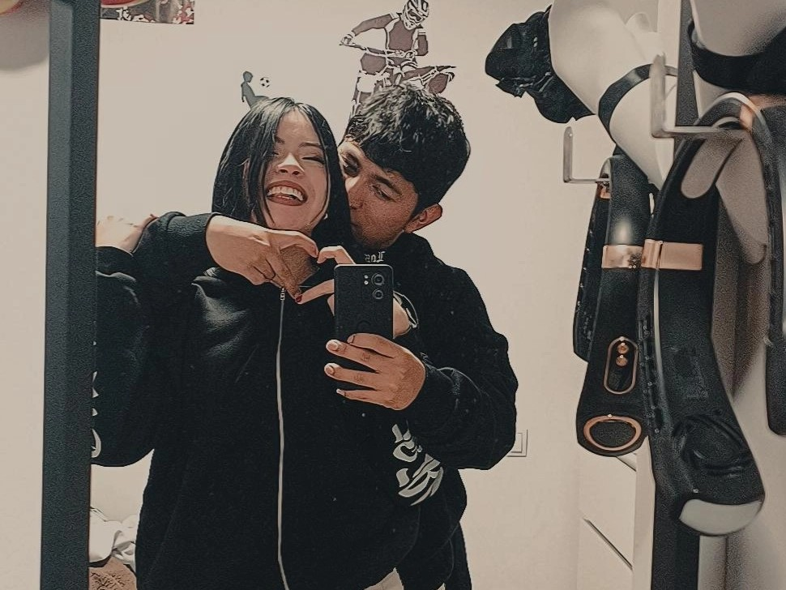
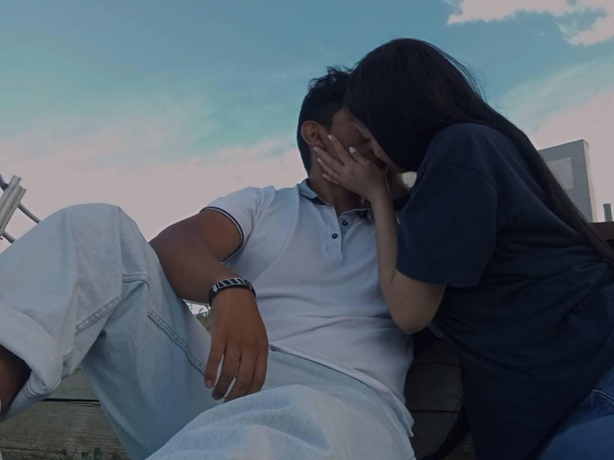

Feliz San Valentín
Hola mi amor, quizás esto no sea una carta escrita papel...
Pero todo lo que quisiera decirte y mostrarte no quepa en una simple
hoja de papel.
Antes de todo como has leído Feliz Día de San Valentín, este es
nuestro primer Día de San Valentín y espero que no sea el último porque
a pesar de los problemas, discusiones y desconfianzas que hemos tenido seguimos
aquí, intentando que lo nuestro funcione con más amor siempre que sea posible.

Desde que hablamos por primera vez por mensaje senti una cierta conexión contigo,
quizás era como tu dijiste a lo mejor era una ilusión, una ilusión por querer estar
con alguien que tiene todo lo que he buscado. Entonces quise verte, hacer planes contigo,
aunque sean nimiedades como estar en un banco y mirar a la nada pero que fuera contigo.
Entonces el primer día que te vi se me aceleró el corazón, hacía mucho que no sentía
lo que sentí por tí. Aquel día intente hacert reír, disfrutar de la quedada aunque no estuvieras
por la labor pero quería que te sintieras bien y cómoda conmigo.

Me acuerdo que en nuestra primera quedada o "cita" fuimos a jugar a los bolos y algun otro juego
en el ILUSIONA de Puerto Venecia, luego tomamos algo en Anubis, unos cócteles sin alcohol jaja. Y
finalmente nos sentamos y luego nos acostamos en esas tumbonas de cemento frente al lago viendo
a los patitos y fue en ese momento en el que me di cuenta que quería estar contigo.
En ese momento todo se detuvo, el viento dejo de soplar, la luz del sol llegaba más suave, el
sonido del agua era más calmado y aunque no me decidí totalmente por darte un beso, pegue
un salto de fe y me acerqué, sentí cada latido de mi corazón, cada respiración y me enamore de tí.

Quizás no estuve decidido del todo y eso te hizo daño... Pero ahora TE AMO y de esto
no tengo ninguna duda, y pienso amarte mientras tu decidas amarme igual e incondicionalmente.
FELIZ DÍA DE SAN VALENTÍN MI AMOR